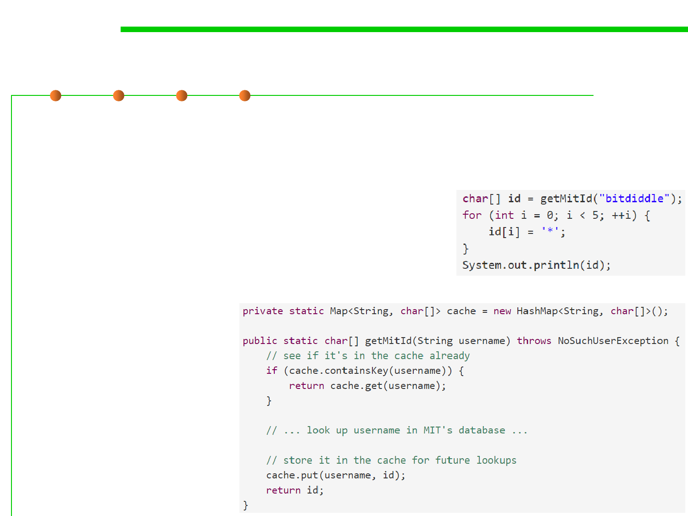

3.2 Designing Specification
Mutable objects reduce changeability
▪ Now both the client and the implementer separately decide to
make a change. The client is worried about the user’s privacy, and
decides to obscure the first 5 digits of the id:
▪ The implementer is worried about the
speed and load on the database, so the
implementer introduces a cache that
remembers usernames that have been
looked up:
▪ What will happen?